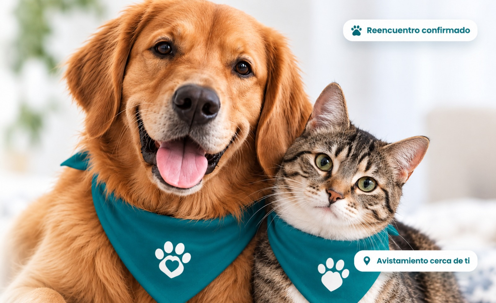

Sube una foto y te ayudamos a reencontrarla con su familia, usando búsqueda inteligente en lugar de carteles pegados en postes.
Buscaremos coincidencias cerca de ti.

mascotas perdidas nunca regresan a casa, porque la información sobre ellas queda dispersa en grupos de redes sociales y carteles físicos que pocas personas ven a tiempo.
Cada reporte vive en un grupo distinto de Facebook o WhatsApp, sin un lugar central donde buscar.
Comparar fotos y descripciones a mano toma horas que, en una emergencia, valen mucho.
Alguien ve a la mascota pero no sabe cómo avisar a la familia correcta ni a tiempo.
PetAlert IA guía a cada familia desde el registro de su mascota hasta el contacto con quien la encontró, comparando automáticamente reportes y avistamientos.
Ingresas la información de tu mascota: especie, señas y fotos.
Publicas la mascota como perdida con fotos y última ubicación.
El sistema compara los reportes y muestra posibles coincidencias.
Recibes una alerta sobre posibles avistamientos cercanos.
Te comunicas directo con quien encontró o avistó a tu mascota.
Diseñamos este prototipo aplicando teoría del color y fundamentos de UX/UI centrados en la claridad, la confianza y el reencuentro.
Lideró la definición del problema y el flujo de usuario, desde el registro hasta el contacto entre familias.
Desarrolló la paleta de color y el sistema tipográfico que le dan a PetAlert IA su personalidad cercana.
Estructuró la lógica del prototipo: registro, coincidencias automáticas y notificaciones.
Cifras de referencia para esta demo, usadas como meta de impacto del prototipo.
Datos simulados con fines de demostración del prototipo.
Completa el formulario para registrar a tu mascota, reportarla como perdida o simplemente conocer más sobre el proyecto.